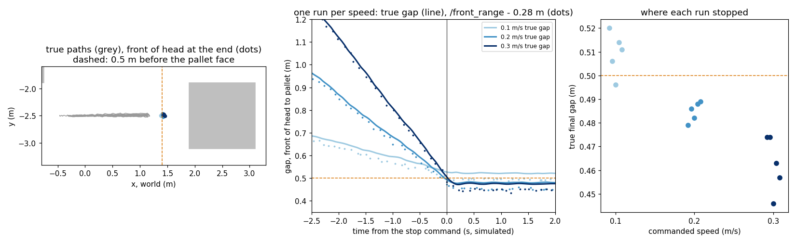

Sense and avoid · Project 5
Sense obstacles and stop
Goal
Read the robot's two range sensors and act on them. A node turns the 2D scan (/scan) into one number, the nearest obstacle in a
sector straight ahead, and the depth image (/camera/depth/image_raw) into another, the depth at the image centre, and publishes
both. A second node walks the Go2 forward and stops it 0.5 m before whatever is ahead. You then measure where the robot really
stopped, on the simulator's ground truth, at three speeds and five runs each, and split the error into its parts: sensor bias,
the time between scans, message latency, and the distance the gait needs to come to rest.
What you will learn
- Reading a
sensor_msgs/LaserScan: bearings fromangle_minandangle_increment, and which returns to throw away. - Reading a
32FC1depth image from its raw bytes with numpy, including the row stride (step). - Publishing a derived measurement as a topic (
sensor_msgs/Range) that keeps the sensor's timestamp, so its age can be measured. - A stop rule that accounts for where the sensor sits on the robot, and a timeout for when the sensor goes quiet.
- Measuring a closed-loop behaviour against ground truth, and explaining the error with numbers rather than guesses.
- Why taking the minimum of noisy beams reads short, and why a depth image is a slower stop signal than a scan here.
Before you start
Do project 1 (starting the stack, reading /odom_gt, why only a zero twist stops CHAMP) and
project 2 (handling Ctrl-C so a node can send its last zero, and the stopping distance
after a zero twist, which this project measures again in a different way).
Every terminal starts with:
cd go2-nav-sim
source env.sh
and the stack must be running: scripts/up.sh, which prints stack up. This project needs only the simulator and the estimation
launch (it reads /scan, which pointcloud_to_laserscan makes from /lidar/points); Nav2 can stay up, since it publishes on
/cmd_vel only while it has a goal.
The test obstacle is the low wood pallet at (2.5, -2.5) in the world frame, 1.2 m square and 0.45 m high
(BOXES[2] in src/go2_nav_sim/scripts/make_arena.py). Its west face is at x = 1.9. The robot approaches it along the line
y = -2.5, facing +x. /odom_gt is relative to the start marker A = (-4.5, -3.5), so world x = /odom_gt x - 4.5.
| File | What it is |
|---|---|
obstacle.py |
the pure logic, no ROS: nearest return in a sector, centre depth, the stop rule |
test_obstacle.py |
6 unit tests for obstacle.py |
sense.py |
node: /scan to /front_range, /camera/depth/image_raw to /centre_depth |
stop_at_obstacle.py |
node: walks forward, stops when the gap reaches 0.5 m, exits |
sense_and_stop.launch.py |
starts both nodes, ends when the robot has stopped |
measure_stops.py |
repeats the stop and scores each run on /odom_gt |
sensor_age.py |
rate and age of /front_range and /centre_depth in simulated time |
snapshot.py |
saves one scan, one depth image and the true pose to an .npz file |
plot.py |
the summary table and both figures |
record.py |
records a camera topic to MP4 and closes the file cleanly on Ctrl-C |
results/ |
my CSVs and snapshots behind every number below; your runs go to ~/p05_runs |
Steps
1. Run the unit tests
python3 -m pytest -q projects/p05_sense-and-stop
Expected:
6 passed in 0.51s
Check: the tests need no ROS graph, so they pass with the stack down.
2. Start the sensing node
python3 projects/p05_sense-and-stop/sense.py
Expected, right after a fresh scripts/up.sh with the robot on A facing +x (the first report shows nan before the first
scan arrives):
[INFO] [...] [sense]: /scan -> /front_range (+-20 deg), /camera/depth/image_raw -> /centre_depth
[INFO] [...] [sense]: front nan m at +nan deg centre depth nan m
[INFO] [...] [sense]: front 4.22 m at -19.6 deg centre depth inf m
The bearing (-19.6 deg) should match exactly; the front distance will not, and anything from about 4.0 to 5.0 m is
right. The nearest return in the sector is the south wall, seen by the beam at the right edge of the sector (-19.6 deg,
the last beam inside ±20 deg). That wall's inner face is at y = -4.9, 1.42 m to the right of the robot, so the edge beam
meets it at
front = 1.42 / sin(19.6 deg - yaw)
where yaw is how far the robot stands turned to the left of +x. The yaw at which the robot settles after a start is not the same every time, and each degree moves the reading by about 0.2 m: 4.04 m at yaw -1 deg, 4.23 at 0, 4.45 at +1, 4.70 at +2 and 4.97 at +3. Check yours: in a second terminal
ros2 topic echo --once /odom_gt --field pose.pose.orientation.z
prints z, and yaw ≈ 2 × z radians for a robot standing level. Mine printed -0.0013, a yaw of -0.15 deg, for which the formula gives 4.20 m against the 4.22 m in the log.
The centre depth depends on yaw too. Straight ahead from A (y = -3.5) nothing is closer than 8 m, the depth camera's far clip,
so up to a yaw of about +2.8 deg the centre depth is inf. Turned further left, the centre of the image swings onto the
pallet: from about +3 deg it reads the corner of the pallet's south face (y = -3.1) at 6.2 to 7.2 m, and from about +3.6 deg
its west face (x = 1.9) at about 6.0 m (these from one depth image, with the 5 × 5 patch moved sideways, 0.12 deg a pixel).
I also turned the robot on A with short twists: at a yaw of +2.65 to +2.78 deg all 150 depth images gave inf, and at +3.6 deg
all 100 gave 6.00 m. So near +3 deg expect a mix of inf and about 7.2 m, and a finite centre depth above that; neither is a
fault. Leave sense.py running.
Check, in the second terminal:
ros2 topic echo --once /front_range --field range
prints a number within a few centimetres of the front value in the log (mine: 4.219).
3. Measure how often the readings come and how old they are
python3 projects/p05_sense-and-stop/sensor_age.py
Expected (my run, robot standing, other simulators running on the machine):
front_range: 312 messages in 31.1 s; interval mean 0.100 max 0.220 s, 0 over 0.5 s; age mean 0.056 max 0.178 s
centre_depth: 284 messages in 30.9 s; interval mean 0.109 max 0.915 s, 7 over 0.5 s; age mean 0.171 max 0.623 s
Age is the simulated time at which the reading arrived minus the stamp of the scan or image it came from. Check: front_range
arrives every 0.1 s of simulated time (the lidar runs at 10 Hz), and centre_depth is about three times older on arrival.
4. Walk to the start of the test lane and take a snapshot
python3 projects/p05_sense-and-stop/measure_stops.py --goto-start
The robot walks to a true gap of 2.0 ± 0.1 m in front of the pallet, on y = -2.5, facing +x, and stands. It stops as soon as it is inside that window, so your gap can be anywhere from 1.9 to 2.1 m. Expected (from a fresh start on A):
at the start: x=-0.467 y=-2.502 yaw=+0.7 deg, true gap 2.087 m
The gap is measured from the front of the head, 0.28 m ahead of base_link, where the camera sits. Then save one scan and one
depth image and draw them:
mkdir -p ~/p05_runs
python3 projects/p05_sense-and-stop/snapshot.py ~/p05_runs/snapshot.npz
python3 projects/p05_sense-and-stop/plot.py --snap ~/p05_runs/snapshot.npz
With --snap, plot.py only draws the snapshot, and writes it next to the .npz file: ~/p05_runs/scan_and_depth.png.
The figure below is mine (results/snapshot.npz), taken at a true gap of 1.93 m, so your numbers will differ by as much as
your gap does:

Check: the scan's nearest return minus 0.28 m and the depth at the centre should agree within a few centimetres. Mine: 2.19 - 0.28 = 1.91 m against 1.93 m. A later snapshot of mine, at a true gap of 2.072 m, gave 2.33 - 0.28 = 2.05 m against 2.07 m.
5. Stop in front of the pallet
Stop sense.py with Ctrl-C (the launch file starts its own copy). It exits without printing anything. Then:
ros2 launch projects/p05_sense-and-stop/sense_and_stop.launch.py
Expected (speed 0.3 m/s, gap 0.5 m, the defaults):
[python3-2] [INFO] [...] [stop_at_obstacle]: /front_range: walk at 0.3 m/s, stop at a 0.5 m gap (front 0.28 m ahead of the sensor frame, lead 0.0 m)
[python3-2] STOP t=236.60 range=0.759 gap=0.479 age=0.064
[INFO] [python3-2]: process has finished cleanly [pid ...]
[INFO] [python3-1]: sending signal 'SIGINT' to process[python3-1]
[INFO] [python3-1]: process has finished cleanly [pid ...]
In between, sense.py (python3-1) prints its report once a second, as in step 2. When stop_at_obstacle.py exits, the
launch sends SIGINT to sense.py, which is the line before the last.
gap in the STOP line is what the sensor said; the true gap comes from ground truth. Check:
ros2 topic echo --once /odom_gt --field pose.pose.position.x
and compute 1.9 - (x - 4.5) - 0.28. I got 0.444 m in the run that printed the STOP line above, and 0.456 m in the next
(gap=0.485). Earlier runs gave 0.447, 0.473 and 0.470 m, and the video run in Results 0.439 m. Over these six
runs the robot ended 0.439 to 0.473 m from the pallet, 3 to 6 cm closer than asked; allow 3 to 7 cm for yours, since the
exact number changes from run to run. The next two steps measure why.
To record a video of the run as well, start the recorder in another terminal before the launch, and stop it with Ctrl-C afterwards:
python3 projects/p05_sense-and-stop/record.py ~/p05_runs/spectator.mp4 --topic /spectator/cam/image_raw
On Ctrl-C it closes the file and prints one line, mine .../spectator.mp4: 276 frames (27.6 s at 10 frames per second of
simulated time). It is project 2's record_reliable.py with its own Ctrl-C handling: that recorder sometimes ends in an
ExternalShutdownException traceback instead (If it goes wrong).
6. Measure the stop over several runs
Start sense.py again (step 2). Then:
python3 projects/p05_sense-and-stop/measure_stops.py --speeds 0.1,0.2,0.3 --runs 5 --out ~/p05_runs
For each run the script walks back to a 2.0 m gap, stands for 2 s, starts stop_at_obstacle.py with the given speed, records
/odom_gt, /front_range and /cmd_vel until 2 s after it exits, and prints one line. Each run took about a minute of wall
time on my machine for the first set in Results, and 24 s on average for the second (356 s for 15 runs). Expected, the first runs at 0.1 and 0.3 m/s:
speed_cmd=0.1 v_true=0.076 scan_age=0.033 gap_sensed=0.497 gap_true_at_trigger=0.527 gap_final=0.52 coast=0.006 t_to_still=0.46 y_end=-2.498 yaw_end_deg=2.4
speed_cmd=0.3 v_true=0.318 scan_age=0.058 gap_sensed=0.484 gap_true_at_trigger=0.505 gap_final=0.474 coast=0.031 t_to_still=0.6 y_end=-2.467 yaw_end_deg=2.4
| Field | Meaning |
|---|---|
v_true |
true speed over the 0.5 s before the trigger |
scan_age |
age of the reading that triggered the stop |
gap_sensed |
the gap the sensor reported at the trigger |
gap_true_at_trigger |
the true gap at the moment the node received that reading |
gap_final |
the true gap at the end of the run, robot standing |
coast |
how far the robot moved after the zero command |
t_to_still |
time from the zero to standstill, where standstill means less than 1 cm moved over the previous 0.5 s; so this time includes up to 0.5 s of that window |
Check: every run prints a line. A run that prints no STOP line (TIMEOUT ...) was stopped by the sensor timeout, not by the
obstacle (If it goes wrong).
7. Summarise and plot
python3 projects/p05_sense-and-stop/plot.py --dir ~/p05_runs
prints one line per speed and writes ~/p05_runs/stops.png. Mine are in Results.
8. Stop
Ctrl-C sense.py; it exits without printing anything. Both stop_at_obstacle.py and measure_stops.py end with a zero on
/cmd_vel, so the robot is standing. Then scripts/stop.sh.
How the code works
obstacle.py: the nearest return in a sector
def front_min(ranges, angle_min, angle_inc, half_angle, range_min, range_max):
r = np.asarray(ranges, dtype=float)
a = angle_min + angle_inc * np.arange(len(r))
ok = (np.abs(a) <= half_angle) & np.isfinite(r) & (r >= range_min) & (r <= range_max)
if not ok.any():
return math.inf, math.nan
i = np.flatnonzero(ok)[np.argmin(r[ok])]
return float(r[i]), float(a[i])
Beam i points at bearing angle_min + i * angle_increment in the scan's frame (base_footprint, x forward, y left), so
straight ahead is bearing 0. Here the scan has 901 beams, 0.4 deg apart, and a ±20 deg sector holds 100 of them. The scan is
published with use_inf: true (src/go2_nav_sim/config/scan.yaml): a beam that hit nothing is inf, which means "no
obstacle seen", so it must be skipped, as must values outside [range_min, range_max]. An empty sector returns inf, and the
stop rule below never fires on inf.
For a flat face square to the robot, the beam at bearing b reads d / cos b, so the minimum over the sector is the beam closest to straight ahead and equals the perpendicular distance d. The minimum also picks the most negative noise of all the beams near the centre, which is part of the bias measured below.
obstacle.py: depth at the image centre and the stop rule
def centre_depth(depth, half=2):
h, w = depth.shape
p = depth[h // 2 - half:h // 2 + half + 1, w // 2 - half:w // 2 + half + 1]
p = p[~np.isnan(p)]
return float(np.median(p)) if p.size else math.inf
def should_stop(front_range, stop_gap, front_offset):
return front_range - front_offset <= stop_gap
The median of a 5 × 5 patch, so one bad pixel does not decide. A pixel with nothing within the camera's 8 m far clip is
+inf, and it stays in the median as "far": only nan is dropped. An earlier version dropped every non-finite pixel, so at
the edge of an object the one to five patch pixels that hit it decided alone (on A at a yaw of +2.65 to +2.78 deg it read
7.20 m in 1 of 150 images where this version reads inf in all). A 32FC1 depth pixel is the distance along the camera's optical
axis (z in camera_optical), not along the ray, so for a face square to the camera it is the perpendicular distance at every pixel.
The scan is measured from base_footprint, below base_link, but the front of the head is 0.28 m further forward
(urdf/go2_nav.xacro: the camera at xyz="0.28 0 0.03"). So the gap is
gap = range - 0.28 m
and the robot should stop when gap <= 0.5, i.e. at a scan range of 0.78 m. The depth camera is at the front already, so it is
used with front:=0.0.
sense.py: from raw bytes to a Range message
d = np.frombuffer(m.data, np.float32).reshape(m.height, m.step // 4)[:, :m.width]
r = centre_depth(d)
self.pub_depth.publish(Range(header=m.header, ...range=r))
m.step is the length of one row in bytes. It is 4 × 640 here, but a driver may pad rows, so the image is reshaped by step
and cut to width. Both outputs reuse the input's header, so the stamp on /front_range is the time of the scan, and anyone
downstream can compute how old the reading is. The depth subscription is reliable: a 640 × 360 float image is 0.9 MB, and project
2 found that large best-effort messages were mostly lost on a loaded machine.
stop_at_obstacle.py: walk, stop, and stop anyway when the sensor goes quiet
def on_range(self, m):
self.t_reading = self.now()
if self.state == 'wait':
self.state = 'walk'
if self.state == 'walk' and should_stop(m.range, self.gap + self.lead, self.front):
self.send(0.0) # at once, not at the next timer tick
...
def on_timer(self):
t = self.now()
if self.state == 'walk':
if t - self.t_reading > self.timeout: # no news is not good news: stop
...
self.send(0.0)
else:
self.send(self.speed) # CHAMP holds the last command; resend it anyway
Three states: wait until the first reading (it never walks blind), walk, and stopped, which sends zeros for 1 s and exits.
The stop is decided in the subscription callback and sent at once, so a 10 Hz timer adds no delay. If no reading arrives for
timeout seconds of simulated time (0.5 s by default, five scan periods) it stops anyway. lead moves the trigger earlier by a
fixed distance, for exercise 1.
Where the stopping error comes from
Let g_s be the gap the sensor reported at the trigger, g_t the true gap when the node received it, and c the coast after the
zero. The final true gap is
gap_final = 0.5 + (g_s - 0.5) - (g_s - g_t) - c
Each term has a cause you can measure:
g_s - 0.5is at most 0 and at least about -v × 0.1 s: the robot crosses the 0.5 m line between two scans, and the stop fires on the first scan past it.g_s - g_tis the sensor's own bias plus the distance walked while the reading was in transit: bias + v × age.cis the distance the gait needs to come to rest after the zero.
measure_stops.py computes the true gap from ground truth the same way the node computes the sensed one:
x, y = p.x + arena.A[0], p.y + arena.A[1] # /odom_gt is relative to A; back to the world frame
self.gt.append((stamp(m), x, y, yaw, FACE_X - x - FRONT * math.cos(yaw))) # last field: true gap
Results
Measured on a shared machine with nine other Gazebo instances running (load average 81 to 145 on 32 cores, from uptime
before and after the runs). scripts/up.sh timed out waiting for Gazebo, so I started sim.launch.py and
estimation.launch.py by hand and Nav2 was not running. All times are simulated seconds. Five runs per speed, all approaching
the pallet from a 2.0 m gap (results/stop.csv and results/runs/, made by step 6 with --out projects/p05_sense-and-stop/results).
Summary from python3 projects/p05_sense-and-stop/plot.py:
speed true v n final gap (m) error mean sensed-0.5 trigger sensed-true coast to still (s) standing bias scan age (s)
0.1 0.077 5 0.496..0.520 +0.009 -0.006 -0.026 0.010 0.47 -0.026 0.048
0.2 0.187 5 0.479..0.489 -0.015 -0.013 -0.017 0.020 0.58 -0.027 0.060
0.3 0.303 5 0.446..0.474 -0.037 -0.008 -0.007 0.037 0.62 -0.027 0.067
| Commanded speed | True speed (mean) | True final gap, 5 runs (m) | Mean error | Between scans g_s - 0.5 |
Minus g_s - g_t |
Minus coast |
|---|---|---|---|---|---|---|
| 0.1 m/s | 0.077 m/s | 0.520, 0.506, 0.496, 0.514, 0.511 | +0.009 m | -0.006 | +0.026 | -0.010 |
| 0.2 m/s | 0.187 m/s | 0.479, 0.486, 0.482, 0.488, 0.489 | -0.015 m | -0.013 | +0.017 | -0.020 |
| 0.3 m/s | 0.303 m/s | 0.474, 0.474, 0.446, 0.463, 0.457 | -0.037 m | -0.008 | +0.007 | -0.037 |
The last three columns add up to the mean error within 1 mm. Read from the table:
- The scan reads short. Standing still at the end of each run,
/front_range - 0.28was 0.026 to 0.027 m less than the true gap ("standing bias"), at every speed. Exercise 3 splits that into two parts. g_s - g_tfollows bias + v × age: -0.027 + 0.077 × 0.048 = -0.023, -0.027 + 0.187 × 0.060 = -0.016 and -0.027 + 0.303 × 0.067 = -0.007 m, against -0.026, -0.017 and -0.007 measured. In this set the latency term cancelled most of the bias at 0.3 m/s, because the scans happened to arrive older at the higher speeds (0.048, 0.060 and 0.067 s). Nothing in the code makes the age grow with speed. It changed between my two sets (0.036 to 0.046 s in the second, which ran under a lower load), and the second set below shows a weaker trend. With ages that do not grow with speed there is no trend at all, so treat it as a property of this one set. What carries over is the model: check bias + v × age against your own table.- The coast grows with speed: 0.010, 0.020 and 0.037 m, about 0.12 s × v at all three speeds. At 0.3 m/s, project 2 measured 0.035 to 0.041 m after a zero twist, the same gait behaviour.
- At 0.1 m/s commanded, the true speed was 0.064 to 0.088 m/s: CHAMP walks slower than commanded at this speed.
So at 0.1 m/s the scan bias dominates and the robot ends 0.9 cm further from the pallet than asked, and at 0.3 m/s the coast dominates and it ends 3.7 cm closer. The spread within a speed is up to 2.8 cm (0.446 to 0.474 m at 0.3 m/s).
A second set of 15 runs, made later with the code as it is now (results/rerun/, step 6 with --out there; 356 s of wall
time, load average 41 to 74), summarised by plot.py --dir projects/p05_sense-and-stop/results/rerun:
speed true v n final gap (m) error mean sensed-0.5 trigger sensed-true coast to still (s) standing bias scan age (s)
0.1 0.074 5 0.499..0.521 +0.013 -0.003 -0.026 0.010 0.49 -0.026 0.036
0.2 0.187 5 0.468..0.493 -0.015 -0.012 -0.023 0.025 0.59 -0.027 0.044
0.3 0.303 5 0.438..0.479 -0.041 -0.015 -0.014 0.040 0.62 -0.028 0.046
The standing bias, the coast and the mean error repeat to within 5 mm. The trigger term moved with the scan age: bias + v × age gives -0.023, -0.019 and -0.014 m against -0.026, -0.023 and -0.014 measured. Expect your table to look like one of these two and to differ from both by a centimetre or so, more in the trigger column than in the others.

In the middle panel the sensed dots sit about 2.5 cm below the true line once the robot stands, which is the standing bias.
The video is the step 5 launch at 0.3 m/s from a 1.93 m gap, spectator camera on the left and chase camera on the right, both
recorded with record_reliable.py (161 and 167 frames, simulated time) and joined with
ffmpeg -i spectator.mp4 -i chase.mp4 -filter_complex "[0:v]scale=640:360[a];[1:v]scale=640:360[b];[a][b]hstack=inputs=2:shortest=1" -c:v libx264 -crf 26 -pix_fmt yuv420p stop_0.3.mp4
(16.1 s, 250 kB). That run ended at a true gap of 0.439 m (from /odom_gt afterwards); the run in step 5 ended at 0.444 m.
Try this
- Cancel the mean overshoot at 0.3 m/s with
lead. Calibrate it on your own runs: take theerror meanof the 0.3 line that step 7 printed for you, and trigger that much earlier. My first set gave -0.037 m, so:
bash
python3 projects/p05_sense-and-stop/measure_stops.py --speeds 0.3 --runs 3 --tag ex1 --out ~/p05_runs -- -p lead:=0.037
(with your own number in place of 0.037), then plot.py --dir ~/p05_runs --tag ex1. Do not expect the mean error to land
on zero. Three runs are few, the final gap of single runs at 0.3 m/s spread over 2.8 to 4.1 cm in my two sets, and the scan
age, which sets the trigger term, changes with machine load from one run to the next.
Answer: with lead:=0.037 from the first set I measured final gaps of 0.485, 0.501 and 0.483 m, mean error -0.010 m
(results/exercises/ex1.csv), so the mean moved by 2.7 cm. With lead:=0.041 from the second set's -0.041 m I measured
0.495, 0.480 and 0.503 m, mean error -0.007 m (results/rerun/ex1.csv), a shift of 3.4 cm. Both times the lead removed
most of the mean error. The three runs spread over 1.8 and 2.3 cm: a constant offset moves every run by the same
amount and leaves the run-to-run spread as it was. A lead calibrated against a baseline measured under different load, or against too few runs,
can move the mean much less than the number you put in. If yours moved by less than half of the lead, rerun step 6 at
0.3 m/s and compare the scan age and coast columns with the baseline. A lead fitted at one speed is wrong at the
others: at 0.1 m/s the error was +0.009 and +0.013 m, the other sign.
- Stop on the depth camera instead of the scan:
bash
python3 projects/p05_sense-and-stop/measure_stops.py --speeds 0.3 --runs 3 --tag ex2 --out ~/p05_runs -- -p topic:=/centre_depth -p front:=0.0
What happens, and why?
Answer: in my three runs, two stopped on the timeout, not on the pallet:
no STOP line (TIMEOUT t=940.90: no reading for 0.53 s, stopping); true gap at the end 0.948 m and the same at 0.471 m. The
third triggered on the pallet and ended at 0.368 m, 13 cm too close (results/exercises/ex2.csv). With
-p timeout:=1.5 added, all three triggered on the pallet and ended at 0.408, 0.338 and 0.318 m, with reading ages of 0.107,
0.318 and 0.437 s (results/exercises/ex2t.csv). Step 3 shows the cause: the depth readings arrive 0.171 s old on average
(0.623 s at worst) and with gaps of up to 0.915 s, against 0.056 s and 0.220 s for the scan. At 0.3 m/s an age of 0.437 s is
0.13 m walked before the node even sees the reading; g_s - g_t in those runs was +0.036, +0.107 and +0.143 m. I did not measure where the depth
path loses the time; each image is 0.9 MB, against about 3.6 kB for a scan. Raising the timeout to make the depth stop work also means the
robot walks blind for longer when the stream stalls. The 0.5 s default stopped the robot safely, if early.
- Split the scan's standing bias into a part that every beam shares and a part that comes from taking the minimum. Use my
snapshot taken with the robot standing after a stop (
results/snapshot_stopped.npz, made bysnapshot.py):
python
import math, numpy as np
z = np.load('projects/p05_sense-and-stop/results/snapshot_stopped.npz')
r = z['ranges'].astype(float); a = z['angle_min'] + z['angle_inc'] * np.arange(len(r))
true = 1.9 - (z['pose'][0] - 4.5) # pallet face minus base x, world frame
s = (np.abs(a) <= math.radians(20)) & np.isfinite(r)
d = r[s] * np.cos(a[s]) # each beam's distance to the face along x
print(f'true {true:.3f} beam mean {d.mean():.3f} (std {d.std():.4f}, {s.sum()} beams) nearest range {r[s].min():.3f}')
Answer: true 0.734 beam mean 0.720 (std 0.0066, 100 beams) nearest range 0.711. Of the -0.023 m in this snapshot,
-0.014 m is in the average of all beams and -0.009 m comes from taking the minimum of noisy beams. The lidar has Gaussian
range noise with σ = 0.01 m (urdf/sensors.xacro); the beams in the scan spread by 0.0066 m, so the minimum sat 1.4 of
those below the mean. The minimum of n Gaussian samples sits below their mean by about 1.7 σ for n = 13 and 2.5 σ for
n = 100 (checked with rng.standard_normal((20000, n)).min(1).mean()). Only the beams near
bearing 0 compete for the minimum, because the others read d / cos b. I did not trace the 0.014 m that all beams share. A
median or a low percentile of the central beams instead of the minimum would remove the second part, at the price of
missing a thin obstacle that only one or two beams hit.
If it goes wrong
| Symptom | Cause | Fix |
|---|---|---|
scripts/up.sh prints TIMEOUT waiting for: gazebo although ros2 topic list shows /imu/data and the camera topics |
up.sh waits for gz stats, which did not answer within its time limit while the machine had a load average above 100 |
Check ros2 topic echo --once /imu/data. If it prints, start the rest by hand: ros2 launch go2_nav_sim estimation.launch.py (this project does not need Nav2) |
measure_stops.py prints no STOP line (TIMEOUT ...) |
The node did not get a reading for timeout seconds and stopped the robot on its own. It happened only with /centre_depth (exercise 2), whose readings arrived up to 0.915 s apart |
Check sensor_age.py. Use the scan, or raise -p timeout:=... knowing the robot then walks blind for longer |
Ctrl-C on project 2's record_reliable.py (or projects/common/record_cam.py) prints an ExternalShutdownException traceback and no N frames line |
rclpy's own Ctrl-C handler shuts ROS down under the running spin(), so the recorder's except KeyboardInterrupt sometimes does not see it. Whether it does depends on timing |
ffmpeg gets the Ctrl-C too and finishes the file on its own, so the MP4 can still be complete: check with ffprobe -v error -count_frames -select_streams v -show_entries stream=nb_read_frames -of csv=p=0 FILE.mp4. Use record.py from this project, which sets a flag on Ctrl-C and leaves the loop |
ros2 topic hz /front_range --no-daemon fails with unrecognized arguments: --no-daemon |
ros2 topic hz does not take that flag; ros2 topic list and echo do |
Drop it |
The depth half of scan_and_depth.png is one flat colour |
The snapshot was taken at the stop pose, where the pallet fills the whole image (centre depth 0.45 m) | Take it at the start of the lane, after --goto-start (step 4) |
ros2 launch starts two sense.py |
sense.py from step 2 is still running; the launch starts its own. Both publish on /front_range |
Ctrl-C the first one before step 5 |